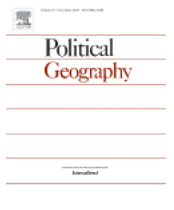

收录于合集

简 介
【 作者介绍 】 Christopher S. Browning ，华威大学（University of Warwick）政治与国际关系系副教授。
【 期刊介绍 】 Political Geography ，Vol.62, 2018, pp.106-115.
Political Geography, 地缘政治研究中的领航期刊，重点关注国际关系、政治科学和其他相关领域的跨学科讨论。2017年该期刊的影响因子为3.495。

【 整理 】庞林立
【审核】 崔宇涵
【提纲】
摘要
重新思考当前地缘政治
作为寻求本体安全的地缘战略
欧洲面临的本体安全挑战
传统地缘政治的诱惑
结论
摘要
近些年来，欧盟常常因其天真的理想主义主张而备受批评，特别是它未能成功反击俄罗斯日渐强硬的外交政策。相比于俄罗斯与生俱来的地缘政治角色，欧盟所强调的规范性的后地缘政治议程被视为一种失败的战略。因而有大量学者指出，面对正在萌芽的“新冷战”，欧盟应当变得更具地缘政治性。然而，对欧盟的后地缘政治特征描述本身是存在问题的。本文的核心观点是，欧盟的战略选择从未远离地缘政治的愿景，欧盟采用的地缘政治视角和推行的地缘战略都离不开其对本体安全的诉求和维护，传统地缘政治话语的回归也是基于这三者之间的联系而出现的。尽管使用诸如“新冷战”之类的表述非常诱人，但这种历史类比很有可能带来潜在的隐患。
重新思考当前地缘政治
2003年，英国外交官Robert Cooper在其著作中根据地缘政治的吸引力将世界划分为三个区域：即将出现混乱的前现代区域，主要特征是脆弱/失败国家，缺乏基本秩序；现代区域，权力政治与地缘政治考量（如均势、边界、主权和战争问题）是主导因素；以及后现代区域，特征是国家边界和主权因素不再重要，更加追求开放性与相互干涉彼此事务。在Cooper的表述中，欧洲属于后现代区域，而它的东方邻居俄罗斯则属于现代区域。在这类说法的引导下，公众舆论有关提高欧盟地缘政治考量的呼声不断增强。然而作者指出，欧盟从未在地缘政治中脱身，将现代区域的俄罗斯与后现代区域的欧盟对立本身也是一种僵化的、基于边界思考的地缘政治思维。本文通过探讨欧盟的邻里政策（European Neighbourhood Policy, ENP）与欧盟的东部关系（Eastern Partnership, EaP）分析欧盟的地缘战略，作者指出，理解欧盟的地缘关系不应从欧盟为何变得更加地缘政治性这一角度入手，相反，应当首先解释欧盟的行动为何从推行之初就已经具有了地缘政治愿景。
Cooper认为地理因素在强调市场与经济主导的时代已经不再重要，但这种观点是对现实的高估：传统地缘政治实践长期存在，同时，经济主导也未脱离对领土和地理的关切。从欧盟推行的具体政策来看，ENP政策实际将欧盟的地缘政治愿景通过其盟友逐步向外扩散，是弥补欧盟东扩可能带来的安全问题的有效措施。从某种意义上来看，ENP是由“同心圆”支撑的欧洲理念，它将欧盟描述为象征稳定和秩序的圆心，但随着与边界距离的增长，安全感、稳定性和秩序感都会降低。因此，ENP政策充满了按照相异性和威胁程度进行等级划分的地缘政治考量。这反映了三大问题：首先，欧盟认识到从欧盟东扩到欧盟邻里政策的转变效果喜忧参半，但尽管如此，欧盟仍然基于内源性的动因致力于以自身的形象标准重新对周边地区进行重塑；其次，欧盟建立“朋友圈”非常依赖先定条件，它试图通过促进合作伙伴采用欧盟规范的做法导致ENP政策中安全的概念化和空间化，换言之，威胁和安全具有了迫使合作伙伴愿意变得像欧盟一样的功能；最后，ENP政策实际效力的大小最终受到合作伙伴接受程度高低的限制，这严重影响了政策的持久性和有效性。
作为寻求本体安全的地缘战略
作者指出，欧盟采取的一系列地缘战略最终是为了寻求本体安全，这也帮助解释了欧盟- 俄罗斯紧张关系的本质，并且远超出了“新冷战”叙事的解释范围。本体安全简单而言指的是行为体能够持续进行日常生活而不陷入忧郁或分裂的状态，而这些状态的特征是高度衰弱的焦虑。维护本体安全要求行为体能够在自己占优势的环境中建立并维持一种秩序和稳定性。这要求行为体：首先建立有关自身身份占优的、具有时空持续性的自我叙事；其次信任天然的特定关系（例如天生的朋友或敌人）；最后，将自我身份的概念路径化，而后构成本体安全感。归根结底，本体论安全需要管理关于存在本质的不确定性和焦虑。俄罗斯带给欧盟普遍的焦虑感，ENP政策的产生不仅是欧盟在应对焦虑过程中重新增强自我身份认同的方式，同时也提供了秩序。
欧洲面临的本体安全挑战
ENP政策同时不可避免的带来了一些安全隐患。这其中包括来自内部的：欧盟成员国对是否达到自身诉求产生焦虑，从而对“我们变成谁”产生道德忧虑，催生耻辱感，同时这种耻辱感还有可能受外部刺激而进一步激化。也包括来自外部的：对本体安全的追求也可能进一步恶化与外部国家的关系，尤其是ENP政策的半内部成员和ENP的外部成员（尤其是俄罗斯）。一些ENP半内部成员相比于加入欧盟主导的自由贸易区，更愿意同俄罗斯增进经贸往来；大量的乌克兰国民愿意拿起武器向俄罗斯分裂，而非保持乌克兰与欧盟的良好关系。俄罗斯对欧盟本体安全的最实质挑战是它拒绝接受欧盟自我叙述的普遍主义假定，也拒绝接受与欧盟相关的让步乃至从属地位的概念（甚至期望）。而欧盟的基本情绪是将俄罗斯视为落后者，会越来越专制而后衰退，注定被边缘化。俄罗斯拒绝接受欧盟规范的行为挑战了欧盟对自我的主张，反映出欧盟并非其自身想象的那样诱人或成功，而随着2008年金融危机的爆发、难民危机的出现以及英国脱欧公投，这些挑战给欧盟带来的不稳定性在不断增强。
传统地缘政治的诱惑
当既定的自我叙述和惯例受到本质挑战时，行动者必然会采取行动重新寻求有序和稳定的感觉，从而获得本体安全。这可以通过重新确认自我叙述、惯例和实践的方式实现，也可以通过接受新的或转向以前提供所需稳定感和自我确定感的概念来完成。“传统地缘政治的回归”和“新冷战”的出现就是在此基础上出现的。欧盟基于传统地缘政治思维将俄罗斯视为内源性威胁和不可信任的在一定程度上稳固了自我身份认同，并且是可以不断自我证实的，它将欧盟再一次放在了道德高地，重新提供了优越感、确认感以弥补内部分歧对自我身份带来的冲击。
结论
总而言之，近年来欧盟- 俄罗斯关系的发展越来越证实了本体安全论中的假设，即“行为者更喜欢他们已经实践和理解的关系，即使这些关系可能会带来冲突或其他害处”。通过提升整体威胁感来实现自我填充的做法虽然在一定程度上帮助改善了行为体的焦虑感，但也导致了对事实不必要的夸大，反而忽视了当前事件的独特性，导致其向既定模式发展。本文进一步提出的问题是，将俄罗斯行为完全视为地缘政治考量的做法是否也存在片面争议，这种单一划分的做法实际忽视了采用其他方式改善欧盟- 俄罗斯关系的可能。
点击左下角“ 阅读原文 ”获取原文pdf版
声明
此文为国政学人微信公众平台外文编译系列文章之一，由国政学人编辑首发，不代表本平台观点。欢迎转发分享，转载请务必注明来源。如有问题，请联系guozhengxueren@163.com
更多阅读
国政学人 （ID：guozhengxueren)
为方便学人及时阅读高质量文章
别忘把国政学人设置 星标 哦~